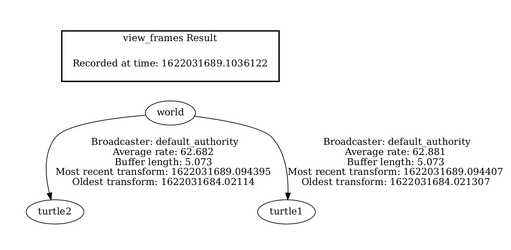
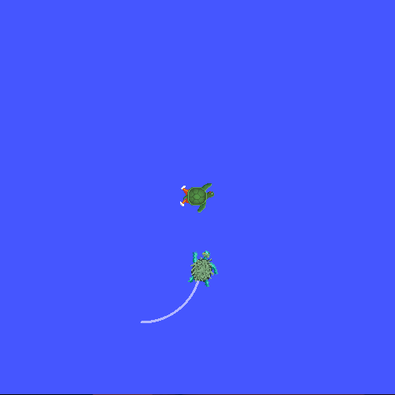

Debugging - tutorial
Tf2 problems can prevent robot frames from transforming correctly, even when the rest of your application is running. This article shows a systematic approach to debugging tf2 frame and timestamp errors with command-line tools. After following these steps, you will be able to identify missing frames, inspect transform timing, and choose an appropriate fix.
Goal: Learn how to use a systematic approach for debugging tf2 related problems.
Tutorial level: Intermediate
Time: 10 minutes
Summary
A tf2 debugging workflow starts by identifying the exact transform request in your code. You can use the following tools to inspect the problem:
tf2_echo: Checks if a transform between two frames is available.view_frames: Generates a frame graph to show which frames exist.tf2_monitor: Reports timing delays between frames.
If a frame such as turtle3 does not exist, correct the frame name.
If the request uses now and causes extrapolation errors, request the latest available transform or use an appropriate timeout.
Background
This tutorial walks you through the steps to debug a typical tf2 problem.
It will also use many of the tf2 debugging tools, such as tf2_echo, tf2_monitor, and view_frames.
This tutorial assumes you have completed the learning tf2 tutorials.
Debugging example
1 Setting and starting the example
For this tutorial we will set up a demo application that has a number of problems. The goal of this tutorial is to apply a systematic approach to find and tackle these problems. First, let’s create the source file.
Go to the learning_tf2_cpp package we created in tf2 tutorials.
Inside the src directory make a copy of the source file turtle_tf2_listener.cpp and rename it to turtle_tf2_listener_debug.cpp.
Open the file using your preferred text editor, and change line 65 from
std::string toFrameRel = "turtle2";
to
std::string toFrameRel = "turtle3";
and change lookupTransform() call in lines 73-77 from
try {
t = tf_buffer_->lookupTransform(
toFrameRel, fromFrameRel,
tf2::TimePointZero);
} catch (const tf2::TransformException & ex) {
to
try {
t = tf_buffer_->lookupTransform(
toFrameRel, fromFrameRel,
this->now());
} catch (const tf2::TransformException & ex) {
And save changes to the file.
In order to run this demo, we need to create a launch file start_tf2_debug_demo_launch with extension .py, .xml, or .yaml in the launch subdirectory of package learning_tf2_cpp:
from launch import LaunchDescription
from launch.actions import DeclareLaunchArgument
from launch.substitutions import LaunchConfiguration
from launch_ros.actions import Node
def generate_launch_description():
return LaunchDescription([
DeclareLaunchArgument(
'target_frame', default_value='turtle1',
description='Target frame name.'
),
Node(
package='turtlesim',
executable='turtlesim_node',
name='sim',
output='screen'
),
Node(
package='learning_tf2_cpp',
executable='turtle_tf2_broadcaster',
name='broadcaster1',
parameters=[
{'turtlename': 'turtle1'}
]
),
Node(
package='learning_tf2_cpp',
executable='turtle_tf2_broadcaster',
name='broadcaster2',
parameters=[
{'turtlename': 'turtle2'}
]
),
Node(
package='learning_tf2_cpp',
executable='turtle_tf2_listener_debug',
name='listener_debug',
parameters=[
{'target_frame': LaunchConfiguration('target_frame')}
]
),
])
<?xml version="1.0" encoding="UTF-8"?>
<launch>
<arg name="target_frame" default="turtle1" description="Target frame name." />
<node pkg="turtlesim" exec="turtlesim_node" name="sim" output="screen" />
<node pkg="learning_tf2_cpp" exec="turtle_tf2_broadcaster" name="broadcaster1">
<param name="turtlename" value="turtle1" />
</node>
<node pkg="learning_tf2_cpp" exec="turtle_tf2_broadcaster" name="broadcaster2">
<param name="turtlename" value="turtle2" />
</node>
<node pkg="learning_tf2_cpp" exec="turtle_tf2_listener_debug" name="listener_debug">
<param name="target_frame" value="$(var target_frame)" />
</node>
</launch>
%YAML 1.2
---
launch:
- arg:
name: "target_frame"
default: "turtle1"
description: "Target frame name."
- node:
pkg: "turtlesim"
exec: "turtlesim_node"
name: "sim"
output: "screen"
- node:
pkg: "learning_tf2_cpp"
exec: "turtle_tf2_broadcaster"
name: "broadcaster1"
param:
- name: "turtlename"
value: "turtle1"
- node:
pkg: "learning_tf2_cpp"
exec: "turtle_tf2_broadcaster"
name: "broadcaster2"
param:
- name: "turtlename"
value: "turtle2"
- node:
pkg: "learning_tf2_cpp"
exec: "turtle_tf2_listener_debug"
name: "listener_debug"
param:
- name: "target_frame"
value: "$(var target_frame)"
Don’t forget to add the turtle_tf2_listener_debug executable to the CMakeLists.txt and build the package.
Now let’s run it to see what happens:
$ ros2 launch learning_tf2_cpp start_tf2_debug_demo_launch.xml
$ ros2 launch learning_tf2_cpp start_tf2_debug_demo_launch.yaml
$ ros2 launch learning_tf2_cpp start_tf2_debug_demo_launch.py
You will now see that the turtlesim came up.
At the same time, if you run the turtle_teleop_key in another terminal window, you can use the arrow keys to drive the turtle1 around.
$ ros2 run turtlesim turtle_teleop_key
[turtle_tf2_listener_debug-4] [INFO] [1630223454.942322623] [listener_debug]: Could not
transform turtle3 to turtle1: "turtle3" passed to lookupTransform argument target_frame
does not exist
You will also notice that there is a second turtle in the lower, left corner. If the demo would be working correctly, this second turtle should be following the turtle you can command with the arrow keys. However, it is not the case because we have to solve some problems first.
2 Finding the tf2 request
Firstly, we need to find out what exactly we are asking tf2 to do.
Therefore, we go into the part of the code that is using tf2.
Open the src/turtle_tf2_listener_debug.cpp file, and take a look at line 65:
std::string toFrameRel = "turtle3";
and lines 73-77:
try {
t = tf_buffer_->lookupTransform(
toFrameRel, fromFrameRel,
this->now());
} catch (const tf2::TransformException & ex) {
Here we do the actual request to tf2.
The three arguments tell us directly what we are asking tf2: transform from frame turtle3 to frame turtle1 at time now.
Now, let’s take a look at why this request to tf2 is failing.
3 Checking the frames
Firstly, to find out if tf2 knows about our transform between turtle3 and turtle1, we will use tf2_echo tool.
$ ros2 run tf2_ros tf2_echo turtle3 turtle1
[INFO] [1630223557.477636052] [tf2_echo]: Waiting for transform turtle3 -> turtle1:
Invalid frame ID "turtle3" passed to canTransform argument target_frame - frame does
not exist
The output tells us that frame turtle3 does not exist.
Then what frames do exist?
If you like to get a graphical representation of this, use view_frames tool.
$ ros2 run tf2_tools view_frames
Open the generated frames.pdf file to see the following output:

So obviously the problem is that we are requesting transform from frame turtle3, which does not exist.
To fix this bug, just replace turtle3 with turtle2 in line 65.
And now stop the running demo, build it, and run it again:
$ ros2 launch learning_tf2_cpp start_tf2_debug_demo_launch.xml
[turtle_tf2_listener_debug-4] [INFO] [1630223704.617382464] [listener_debug]: Could not
transform turtle2 to turtle1: Lookup would require extrapolation into the future. Requested
time 1630223704.617054 but the latest data is at time 1630223704.616726, when looking up
transform from frame [turtle1] to frame [turtle2]
$ ros2 launch learning_tf2_cpp start_tf2_debug_demo_launch.yaml
[turtle_tf2_listener_debug-4] [INFO] [1630223704.617382464] [listener_debug]: Could not
transform turtle2 to turtle1: Lookup would require extrapolation into the future. Requested
time 1630223704.617054 but the latest data is at time 1630223704.616726, when looking up
transform from frame [turtle1] to frame [turtle2]
$ ros2 launch learning_tf2_cpp start_tf2_debug_demo_launch.py
[turtle_tf2_listener_debug-4] [INFO] [1630223704.617382464] [listener_debug]: Could not
transform turtle2 to turtle1: Lookup would require extrapolation into the future. Requested
time 1630223704.617054 but the latest data is at time 1630223704.616726, when looking up
transform from frame [turtle1] to frame [turtle2]
And right away we run into the next problem.
4 Checking the timestamp
Now that we solved the frame name problem, it is time to look at the timestamps.
Remember, we are trying to get the transform between turtle2 and turtle1 at the current time (i.e., now).
To get statistics on the timing, call tf2_monitor with corresponding frames.
$ ros2 run tf2_ros tf2_monitor turtle2 turtle1
RESULTS: for turtle2 to turtle1
Chain is: turtle1
Net delay avg = 0.00287347: max = 0.0167241
Frames:
Frame: turtle1, published by <no authority available>, Average Delay: 0.000295833, Max Delay: 0.000755072
All Broadcasters:
Node: <no authority available> 125.246 Hz, Average Delay: 0.000290237 Max Delay: 0.000786781
The key part here is the delay for the chain from turtle2 to turtle1.
The output shows there is an average delay of about 3 milliseconds.
This means that tf2 can only transform between the turtles after 3 milliseconds are passed.
So, if we would be asking tf2 for the transformation between the turtles 3 milliseconds ago instead of now, tf2 would be able to give us an answer sometimes.
Let’s test this quickly by changing lines 73-77 to:
try {
t = tf_buffer_->lookupTransform(
toFrameRel, fromFrameRel,
this->now() - rclcpp::Duration::from_seconds(0.1));
} catch (const tf2::TransformException & ex) {
In the new code we are asking for the transform between the turtles 100 milliseconds ago. It is usual to use a longer periods, just to make sure that the transform will arrive. Stop the demo, build and run:
$ ros2 launch learning_tf2_cpp start_tf2_debug_demo_launch.xml
$ ros2 launch learning_tf2_cpp start_tf2_debug_demo_launch.yaml
$ ros2 launch learning_tf2_cpp start_tf2_debug_demo_launch.py
And you should finally see the turtle move!

That last fix we made is not really what you want to do, it was just to make sure that was our problem. The real fix would look like this:
try {
t = tf_buffer_->lookupTransform(
toFrameRel, fromFrameRel,
tf2::TimePointZero);
} catch (const tf2::TransformException & ex) {
Or like this:
try {
t = tf_buffer_->lookupTransform(
toFrameRel, fromFrameRel,
tf2::TimePoint());
} catch (const tf2::TransformException & ex) {
You can learn more about timeouts in the Using time tutorial, and use them as below:
try {
t = tf_buffer_->lookupTransform(
toFrameRel, fromFrameRel,
this->now(),
rclcpp::Duration::from_seconds(0.05));
} catch (const tf2::TransformException & ex) {
Summary
In this tutorial you learned how to use a systematic approach for debugging tf2 related problems.
You also learned how to use tf2 debugging tools, such as tf2_echo, tf2_monitor, and view_frames to help you debug those tf2 problems.